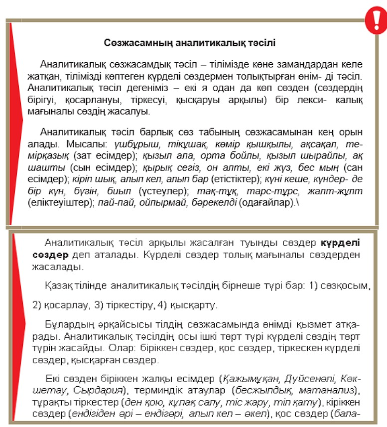
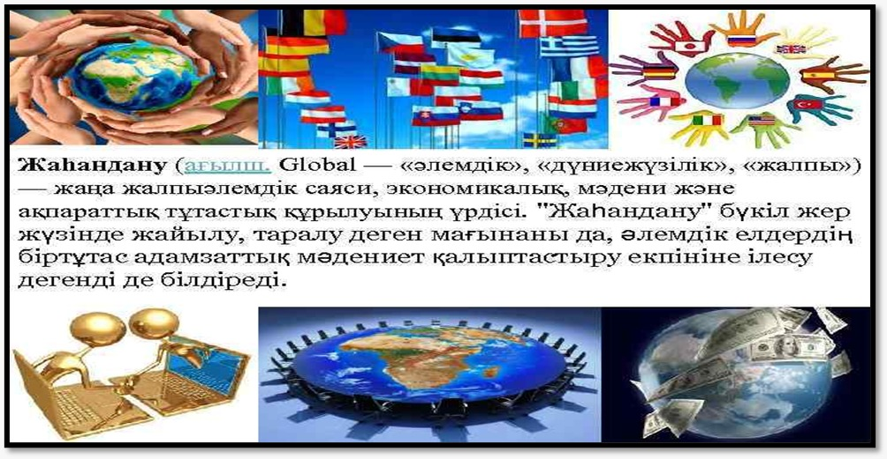
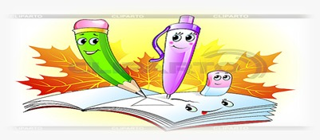

8-ТАПСЫРМА
Аумақтық жаһандану және заманауи мәдениет
I. Теория
Мақсаты: Мәтінде көтерілген ақпаратты талдай отырып, негізгі ойды анықтап және ғаламдық мәселелермен байланыстыру.
Міндеттері: Адамзат дамуының жаһандық мәселелеріне, яғни ұлттық мәдениеттің жаһандану үрдісіне, экономикалық, ақпараттық-коммуникациялық жаһандану мәселелерін қарастыру.
Бағалау критерийлері: Оқылым және тыңдалым материалдары бойынша негізгі ақпаратты іріктеу.
Дәрістің қысқаша тезистері
Аумақтық жаһандану – мемлекетаралық құрылымдардың күшею үрдісі, мемлекетаралық әскери-саяси және экономикалық одақтардың құрылуы. Мәселен, еуропалық одақ. Жаһандану нәтижесінде болашақта ұлттық мемлекеттерге немесе аумақтық құрылымдарға бөлінбейтін біртұтас өркениет құрылуы мүмкін деген болжам соңғы кезде жиі айтылып жүр. Бірақ бұл процесс ұлттар мен халықтар арасындағы этникалық, мәдени айырмашылықтар түгел жойылған жағдайда ғана жүзеге асуы мүмкін. Кейбір мамандар аумақтық қауымдастықтың дәстүрлі мемлекеттерді ығыстыру үрдісі дами түседі деп есептейді. Ал енді бір зерттеушілер аумақтық қоғамдасу үрдісін бүкіләлемдік жаһанданудың зиянды әсерінен қорғанудың бірден бір жолы деп санайды.

Аумақтық жаһандану және халықаралық одақтар
Бақылау сұрақтары:
- Аумақтық жаһандану дегенді қалай түсінесіңдер?
- Әскери-саяси одақтар жаһандануының қаншалықты маңыздылығы бар?
Тапсырманы орындау бойынша нұсқаулық (орындау тәртібі):
- Мәтінді түсініп оқиды, түсінгенін айтады;
- Ережелерді оқып, есте сақтап алады;
- Сұрақтарға жауап береді.
Тапсырмадан күтілетін нәтиже: Берілген ақпаратты оқу, сұрақтарға жауап беру, ережені жаттау.
Тапсыру формасы: Ауызша түрде.
Модуль / пән бойынша ұсынылатын әдебиеттер тізіміне сілтемелер: Okulyk.kz - Қазақ тілі (10-сынып)
II. Практика (СӨЖ № 8.2)

Қазақстандық заманауи мәдениет

Ұлттық салт-дәстүрлер
1-тапсырма. Күрделі сөздерді талдау
Тапсырма: Мәтіннен аналитикалық тәсіл арқылы жасалған күрделі сөздерді тауып, қалай жасалғанын талдаңдар.
Нұсқаулық: Мәтіннен күрделі сөздерді табады; жасалу жолдарын түсіндіреді.
2-тапсырма. Шығарма жазу
Тапсырма: «Қазақстандық заманауи мәдениет» тақырыбы бойынша көркемдегіш құралдарды ұтымды қолданып, шығарма жазыңдар.
Нұсқаулық: «Қазақстандық заманауи мәдениет» тақырыбы бойынша шығарма жазады; шығармада көркемдегіш құралдарды тиімді қолданады; шығарма тақырыбын толықтай аша алады.
3-тапсырма. Салт-дәстүрге қатысты ақпарат
Тапсырма: Суретте берілген салт-дәстүрге қатысты толық ақпарат дайындаңдар.
Нұсқаулық: Суретте берілген салт-дәстүрлер бойынша ақпарат дайындайды; әр салт-дәстүрдің мән-мағынасын ашады; тәрбиелік мәнін түсіндіреді.
Тапсыру формасы: Жазбаша түрде.
Модуль / пән бойынша ұсынылатын әдебиеттер тізіміне сілтемелер: Okulyk.kz - Қазақ тілі (10-сынып)
III. Бағалау парағы
| № | Тапсырма | Дескрипторлар | Ұпай саны | Студенттің ұпай саны |
|---|---|---|---|---|
| 1 | Бақылау сұрақтары: |
• Мәтінді түсініп оқиды, түсінгенін айтады; сұрақтарға жауап береді • Ережелерді оқып, есте сақтап алады |
10 балл 10 балл |
|
| 2 | Мәтіннен аналитикалық тәсіл арқылы жасалған күрделі сөздерді тауып, қалай жасалғанын талдау. |
• Мәтіннен күрделі сөздерді табады; • Жасалу жолдарын түсіндіреді |
5 балл 5 балл |
|
| 3 | «Қазақстандық заманауи мәдениет» тақырыбы бойынша шығарма жазу. |
• «Қазақстандық заманауи мәдениет» тақырыбы бойынша шығарма жазады; • Шығармада көркемдегіш құралдарды тиімді қолданады; • Шығарма тақырыбын толықтай аша алады |
20 балл 10 балл 20 балл |
|
| 4 | Суретте берілген салт-дәстүрге қатысты толық ақпарат дайындау. |
• Суретте берілген салт-дәстүрлер бойынша ақпарат дайындайды; • Әр салт-дәстүрдің мән-мағынасын ашады; • Тәрбиелік мәнін түсіндіреді |
10 балл 10 балл |
|
| Барлығы: | 100 балл | / 100 | ||